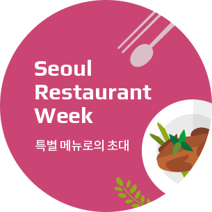

Site Map
행사 안내
행사 소개
주요 프로그램 소개
셰프&바텐더 소개
테이스트오브서울 100선
서울채식레스토랑 50선
프로그램
테이스트오브서울 어워즈
특별 메뉴로의 초대
재래시장과 핫플의 맛남
도시와 농부의 맛남
미식과 영화의 맛남
전통주와의 맛남
해외 셰프와 서울 셰프의 맛남
뉴스
공지사항
미디어
TASTE
OF
SEOUL
2022
09.30 - 10.06
주요 프로그램
미식도시 서울에서 7일간 펼쳐지는
2022 테이스트 오브 서울

2022 테이스트오브서울
테이스트오브서울 100선
구글 지도
네이버 지도
서울 채식 50선
구글 지도
네이버 지도
Chefs & Bartenders